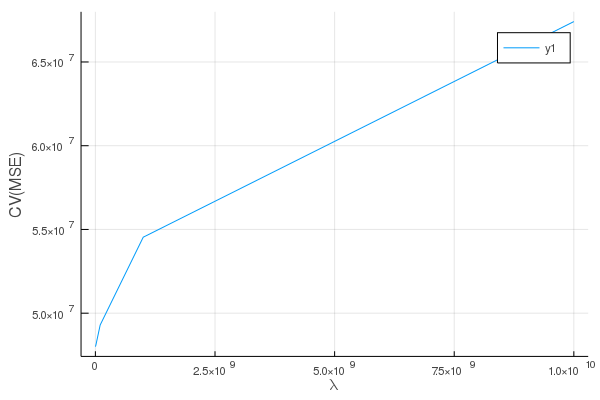
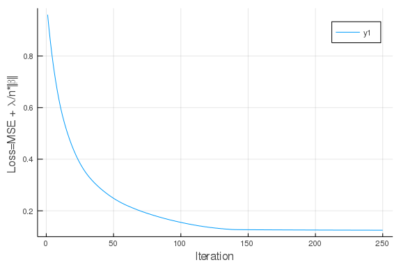
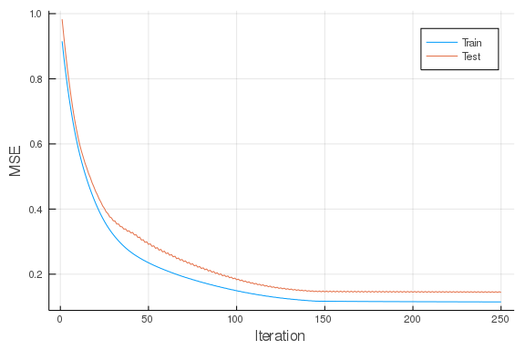

This work is licensed under a Creative Commons Attribution-ShareAlike 4.0 International License
About this document¶
This document was created using Weave.jl. The code is available in on github. The same document generates both static webpages and associated jupyter notebook.
Introduction¶
This document is a companion to my “Machine learning in economics”. Those notes discuss the recent use of machine learning in economics, with a focus on lasso and random forests. The code in those notes is written in R. This document will look at similar code in Julia.
RCall¶
If you want to use the methods of Chernozhukov and coauthors implements
in the R packaga Chernozhukov, Hansen, and Spindler (2016)
or the methods of Athey and coauthors implemented in the R package
Tibshirani et al. (2018) , then it makes sense to use the R
pacakge. You could simply write all your code in R. However, if you
prefer using Julia, you can just call the necessary R functions with
RCall.jl.
Here, we load the pipeline data used in the machine learning methods notes, and do some cleaning in Julia.
using RCall, DataFrames, Missings, Statistics
R"load(paste($(docdir),\"/rmd/pipelines.Rdata\",sep=\"\"))"
println(R"ls()")
RObject{StrSxp}
[1] "#JL" "data"
data = @rget data # data on left is new Julia variable, data on right is the one in R
println(R"summary(data[,1:5])")
RObject{StrSxp}
respondent_id report_yr report_prd major
Min. : 1.0 Min. :1991 Min. :12 Mode :logical
1st Qu.: 64.0 1st Qu.:1997 1st Qu.:12 FALSE:1192
Median :148.0 Median :2003 Median :12 TRUE :2797
Mean :184.3 Mean :2003 Mean :12 NA's :2180
3rd Qu.:214.0 3rd Qu.:2010 3rd Qu.:12
Max. :745.0 Max. :2016 Max. :12
NA's :3371
respondent_name
Centra Pipelines Minnesota Inc. : 22
Tuscarora Gas Transmission Company : 22
Eastern Shore Natural Gas Company : 22
Kern River Gas Transmission Company : 21
National Fuel Gas Supply Corporation: 21
(Other) :2938
NA's :3123
println(describe(data[:,1:5]))
5×8 DataFrame
│ Row │ variable │ mean │ min │ median │ max │ nunique │ nmissing │ eltype │
│ │ Symbol │ Union… │ Any │ Union… │ Any │ Union… │ Union… │ Type │
├─────┼─────────────────┼──────────┼────────────────────────────────────┼────────┼───────────────────────────────────────────────┼─────────┼──────────┼───────────────────────────────────────────┤
│ 1 │ respondent_id │ 184.3 │ 1 │ 148.0 │ 745 │ │ │ Int64 │
│ 2 │ report_yr │ 2003.49 │ 1991 │ 2003.0 │ 2016 │ │ │ Int64 │
│ 3 │ report_prd │ 12.0 │ 12 │ 12.0 │ 12 │ │ 3371 │ Union{Missing, Int64} │
│ 4 │ major │ 0.701178 │ 0 │ 1.0 │ 1 │ │ 2180 │ Union{Missing, Bool} │
│ 5 │ respondent_name │ │ Algonquin Gas Transmission Company │ │ Southern Natural Gas Company │ 440 │ 3123 │ Union{Missing, CategoricalString{UInt32}} │
for c in 59:107 # columns of state mileage, want missing->0
replace!(x->(ismissing(x) || isnan(x)) ? 0.0 : x, data[!,c])
end
println(describe(data[:,59:65]))
7×8 DataFrame
│ Row │ variable │ mean │ min │ median │ max │ nunique │ nmissing │ eltype │
│ │ Symbol │ Float64 │ Float64 │ Float64 │ Float64 │ Nothing │ Int64 │ Union │
├─────┼────────────────┼────────────┼─────────┼─────────┼──────────┼─────────┼──────────┼─────────────────────────┤
│ 1 │ North Carolina │ 0.00358525 │ 0.0 │ 0.0 │ 1.0 │ │ 0 │ Union{Missing, Float64} │
│ 2 │ Tennessee │ 0.0061488 │ 0.0 │ 0.0 │ 0.635202 │ │ 0 │ Union{Missing, Float64} │
│ 3 │ Virginia │ 0.00552028 │ 0.0 │ 0.0 │ 1.0 │ │ 0 │ Union{Missing, Float64} │
│ 4 │ Illinois │ 0.0134891 │ 0.0 │ 0.0 │ 1.0 │ │ 0 │ Union{Missing, Float64} │
│ 5 │ Indiana │ 0.0058707 │ 0.0 │ 0.0 │ 0.550302 │ │ 0 │ Union{Missing, Float64} │
│ 6 │ Kentucky │ 0.0133474 │ 0.0 │ 0.0 │ 1.0 │ │ 0 │ Union{Missing, Float64} │
│ 7 │ Gulf of Mexico │ 0.0140981 │ 0.0 │ 0.0 │ 0.825409 │ │ 0 │ Union{Missing, Float64} │
Suppose we want to estimate the coefficient on transPlant (capital) in
a partially linear model with transProfit (profit) as the outcome.
This can be done with the R function hdm::rlassoEffects.
R"library(hdm)"
completedata = dropmissing(data,[1:10..., 59:122...], disallowmissing=true)
y = completedata[:transProfit]
inc = .!isnan.(y)
y = y[inc]
X = completedata[inc,[6:7..., 59:121...]]
cols = [std(X[c])>0 for c in 1:ncol(X)]
X = X[:,cols]
est = R"rlassoEffects($(X), $(y), index=c(1:2))"
R"summary($est)"
RObject{VecSxp}
[1] "Estimates and significance testing of the effect of target variables"
Estimate. Std. Error t value Pr(>|t|)
transPlant_bal_end_yr 0.034434 0.008878 3.879 0.000105 ***
transPlant_bal_beg_yr 0.086580 0.009383 9.228 < 2e-16 ***
---
Signif. codes: 0 ‘***’ 0.001 ‘**’ 0.01 ‘*’ 0.05 ‘.’ 0.1 ‘ ’ 1
MLJ.jl¶
MLJ.jl is a machine
learning framework for Julia. It gives a unified interface for many
machine learning algorithms and tasks. Similar R packages include
caret and MLR. scikit-learn is
a similar Python package.
For more information on MLJ see
You can see a list of models registered to work with MLJ.jl on
github,
or by calling MLJ::models().
using MLJ
models()
109-element Array{NamedTuple,1}:
(name = ARDRegressor, package_name = ScikitLearn, ... )
(name = AdaBoostClassifier, package_name = ScikitLearn, ... )
(name = AdaBoostRegressor, package_name = ScikitLearn, ... )
(name = BaggingClassifier, package_name = ScikitLearn, ... )
(name = BaggingRegressor, package_name = ScikitLearn, ... )
(name = BayesianLDA, package_name = MultivariateStats, ... )
(name = BayesianLDA, package_name = ScikitLearn, ... )
(name = BayesianQDA, package_name = ScikitLearn, ... )
(name = BayesianRidgeRegressor, package_name = ScikitLearn, ... )
(name = BernoulliNBClassifier, package_name = ScikitLearn, ... )
⋮
(name = Standardizer, package_name = MLJModels, ... )
(name = StaticTransformer, package_name = MLJModels, ... )
(name = TheilSenRegressor, package_name = ScikitLearn, ... )
(name = UnivariateBoxCoxTransformer, package_name = MLJModels, ... )
(name = UnivariateDiscretizer, package_name = MLJModels, ... )
(name = UnivariateStandardizer, package_name = MLJModels, ... )
(name = XGBoostClassifier, package_name = XGBoost, ... )
(name = XGBoostCount, package_name = XGBoost, ... )
(name = XGBoostRegressor, package_name = XGBoost, ... )
To use these models, you need the corresponding package to be installed
and loaded. The @load macro will load the needed package(s) for any
model.
lasso_model = @load LassoRegressor pkg=MLJLinearModels
LassoRegressor(lambda = 1.0,
fit_intercept = true,
penalize_intercept = false,
solver = nothing,) @ 2…60
Let’s fit lasso to the same pipeline data as above.
lasso_model.lambda = 1.0
lasso = machine(lasso_model, X, y)
train,test = partition(eachindex(y), 0.6, shuffle=true)
fit!(lasso, rows=train)
yhat = predict(lasso, rows=test)
println(yhat[1:10])
[0.0, 0.0, 0.0, 0.0, 0.0, 0.0, 0.0, 0.0, 0.0, 0.0]
println("MSE/var(y) = $(mean((y[test].-yhat).^2)/var(y[test]))")
MSE/var(y) = 1.4734944469534543
That doesn’t look very good. All the predictions are zero. This could
happen when the regularization parameter, lambda, is too large.
However, in this case the problem is something else. The warning
messages indicate numeric problems when minimizing the lasso objective
function. This can happen when X is poorly scaled. The algorithm used
to compute the lasso estimates works best when the coefficients are all
roughly the same scale. The existing X’s have wildly different scales,
which causes problems. This situation is common, so MLJ.jl has
functions to standardize variables. It is likely that the hdm package
in R does something similar internally.
lasso_stdx = @pipeline PipeLasso(std=Standardizer(),
lasso=LassoRegressor(lambda=1.0*std(y),
solver=MLJLinearModels.ISTA(max_iter=10000)
)
)
m = machine(lasso_stdx, X, y)
fit!(m, rows=train)
yhat = predict(m , rows=test)
println("MSE/var(y) = $(mean((y[test].-yhat).^2)/var(y[test]))")
MSE/var(y) = 0.1302218664602367
# Get the fitted coefficients
coef = fitted_params(m).fitted_params[1].coefs
intercept = fitted_params(m).fitted_params[1].intercept
sum(abs.(coef).>1e-8) # number non-zero
56
If we want to tune lambda using cross-validation, we can use the
range and TunedModel functions.
r = range(lasso_stdx, :(lasso.lambda), lower=1e1, upper=1e10, scale=:log)
t=TunedModel(model=lasso_stdx,
resampling=CV(nfolds=5),
tuning=Grid(resolution=10),
ranges=r,
measure=rms)
m = machine(t, X, y)
fit!(m, rows=train, verbosity=1)
yhat = predict(m , rows=test)
println("MSE/var(y) = $(mean((y[test].-yhat).^2)/var(y[test]))")
MSE/var(y) = 0.13170341963283844
using Plots
cvmse = m.report.measurements
λ = Float64.(m.report.parameter_values[:])
plot(λ, cvmse, xlab="λ", ylab="CV(MSE)")

Flux.jl¶
Flux.jl is another Julia package
for machine learning. It seems to be emerging as the leading Julia
package for neural networks and deep learning, but other machine
learning models can also be implemented using Flux.jl.
Let’s create a lasso model in Flux.jl.
using Flux, LinearAlgebra
# Scale the variables
Xstd = Flux.normalise(Matrix(X))
X_train = Xstd[train,:]
X_test = Xstd[test,:]
yscale = std(y)
ymean = mean(y)
ystd = (y .- ymean)./yscale
y_train = ystd[train]
y_test = ystd[test]
# Set up the model parameters and initial values
βols = (X_train'*X_train) \ (X_train'*(y_train .- mean(y_train)))
β = param(zeros(ncol(X))) #βols) #zeros(ncol(X)))
b = param([mean(y_train)])
θ = Tracker.Params([β,b])
# Define the loss function
ψ = ones(length(β))
λ = 2.0
pred(x) = b .+ x*β
mse(x,y) = mean( (pred(x) .- y).^2 )
penalty(y) = λ/length(y)*norm(ψ.*β,1)
loss(x,y) = mse(x,y) + penalty(y)
@show loss(X_train,y_train)
loss(X_train, y_train) = 1.017489917959785 (tracked)
# minimize loss
maxiter=2000
obj = zeros(maxiter)
mse_train = zeros(maxiter)
mse_test = zeros(maxiter)
for i in 1:maxiter
Flux.train!(loss, θ, [(X_train, y_train)], Flux.AMSGrad())
mse_train[i] = Tracker.data(mse(X_train,y_train))
mse_test[i] = Tracker.data(mse(X_test, y_test))
obj[i] = Tracker.data(loss(X_train,y_train))
end
lo = 1
hi = 250
plot(obj[lo:hi], ylab="Loss=MSE + λ/n*||β||₁", xlab="Iteration")

plot(lo:hi, [mse_train[lo:hi] mse_test[lo:hi]], ylab="MSE", xaxis=("Iteration")
, lab=["Train" "Test"])

The minimization methods in Flux.train! are all variants of gradient
descent. Each call to Flux.train! runs one iteration of the specified
solver. To find a locaol minimum, Flux.train! can be called repeatedly
until progress stops. The above loop is a simple way to do this. The
@epoch macro can also be useful.
Gradient descent works well for neural networks, but is not ideal for Lasso. Without further adjustment, gradient descent gets stuck in a cycle as jumps from one side of the other of the absolute value in the lasso penalty. Nonetheless, the results are near the true minimum, even though it never exactly gets there.
Additional Resources¶
- Klok and Nazarathy (2019) Statistics with Julia:Fundamentals for Data Science, MachineLearning and Artificial Intelligence
References [references]¶
Chernozhukov, Victor, Chris Hansen, and Martin Spindler. 2016. “hdm: High-Dimensional Metrics.” R Journal 8 (2): 185–99. https://journal.r-project.org/archive/2016/RJ-2016-040/index.html.
Klok, Hayden, and Yoni Nazarathy. 2019. Statistics with Julia:Fundamentals for Data Science, Machinelearning and Artificial Intelligence. DRAFT. https://people.smp.uq.edu.au/YoniNazarathy/julia-stats/StatisticsWithJulia.pdf.
Tibshirani, Julie, Susan Athey, Stefan Wager, Rina Friedberg, Luke Miner, and Marvin Wright. 2018. Grf: Generalized Random Forests (Beta). https://CRAN.R-project.org/package=grf.